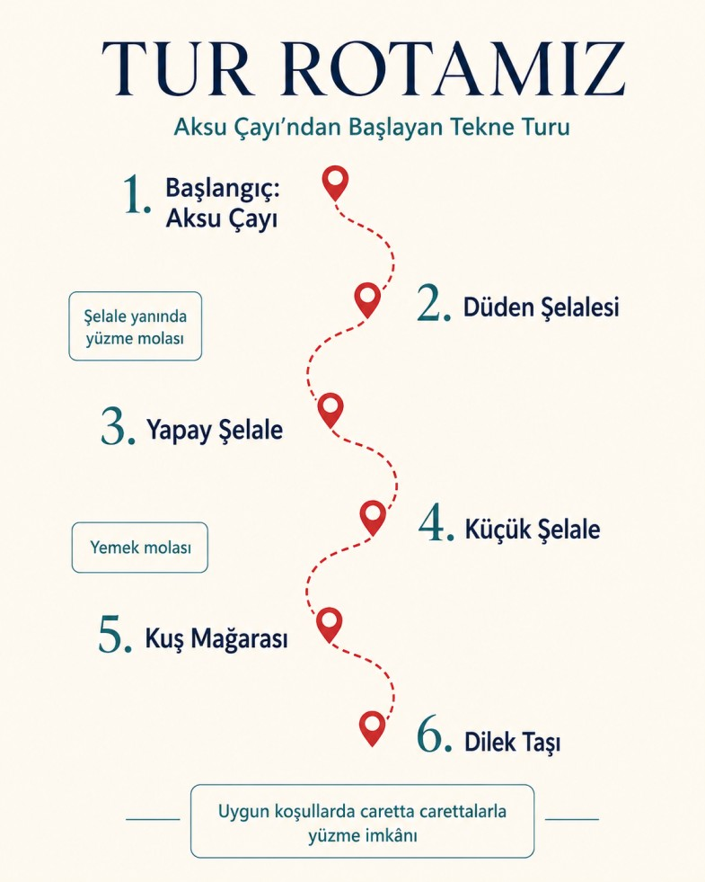
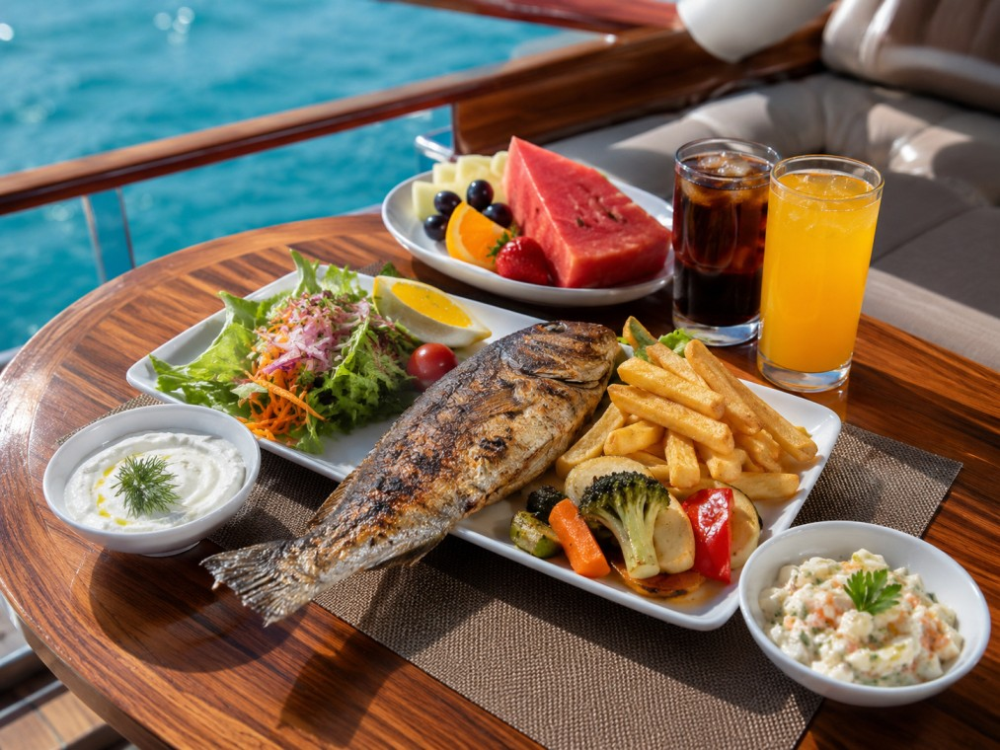
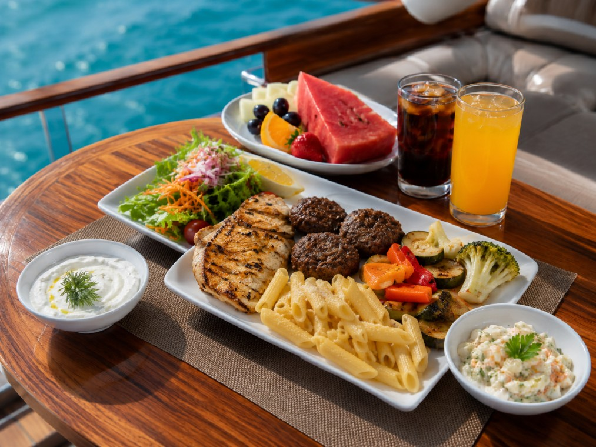
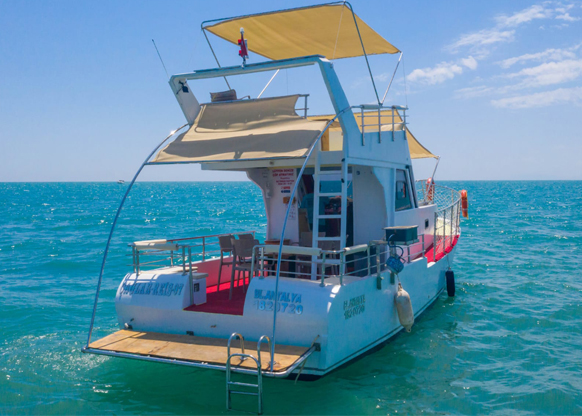

Denizden
Unutulmaz Kareler
Çağlar Reis tekne turlarından manzaralar, koylar ve keyifli anlardan birkaç kare.


Çağlar Reis ile unutulmaz bir tekne turu deneyimi sizi bekliyor.
Antalya Sea Lux, deniz tutkusunu en özel anlarınızla buluşturan bir adrestir. Lüks ve konforun denizle buluştuğu bu yolculukta, her anınızı unutulmaz kılmak için buradayız. Denizin mavisiyle çevrili bu serüvende, VIP hizmetimizle sizi ağırlamaktan mutluluk duyarız. Hayallerinizin ötesinde bir deniz deneyimi için adım atın ve bizimle beraber unutulmaz anılar biriktirin. Antalya Sea Lux ailesine katılmak için şimdi iletişime geçin!
Rezervasyon ve detaylı bilgi için bize hemen ulaşabilirsiniz.
Aksu Çayı’ndan başlayan turumuzda Düden Şelalesi, Yapay Şelale, Küçük Şelale, Kuş Mağarası ve Dilek Taşı rotalarını ziyaret ediyoruz. Şelale yanında yüzme molası ve yemek molası veriyoruz. Ayrıca uygun koşullarda caretta carettalarla yüzme imkânı da sunulmaktadır.

Çağlar Reis tekne turlarından manzaralar, koylar ve keyifli anlardan birkaç kare.
Tur sırasında misafirlerimize sunulan taze ve özenle hazırlanmış menülerle keyifli bir deniz deneyimi yaşatıyoruz.

Deniz keyfinize eşlik edecek balık menümüzde patates kızartması, közlenmiş sebzeler, salata çeşitleri, soft içecekler ve günün meyvesi sunulmaktadır.

Tavuk ve köfte seçenekli menümüzde makarna, közlenmiş sebzeler, salata çeşitleri, soft içecekler ve günün meyvesi ile doyurucu bir lezzet molası sunulmaktadır.

Çağlar Reis, yıllarca Antalya sularında güvenli ve keyifli turlar düzenlemektedir.
Teknemiz tüm denizcilik güvenlik standartlarına uygundur, can yelekleri ve ekipmanlar eksiksizdir.
Sadece denizden ulaşılabilen saklı koyları ve berrak suları sizinle keşfediyoruz.
Her turda taze meyve, içecek ve ev yapımı atıştırmalıklar ikram edilmektedir.
Çağlar Reis ile denize açılan misafirlerimizin Google üzerinden paylaştığı gerçek deneyimler.
Sorularınız için arayabilir ya da WhatsApp'tan ulaşabilirsiniz. Hızlı dönüş garantisi.